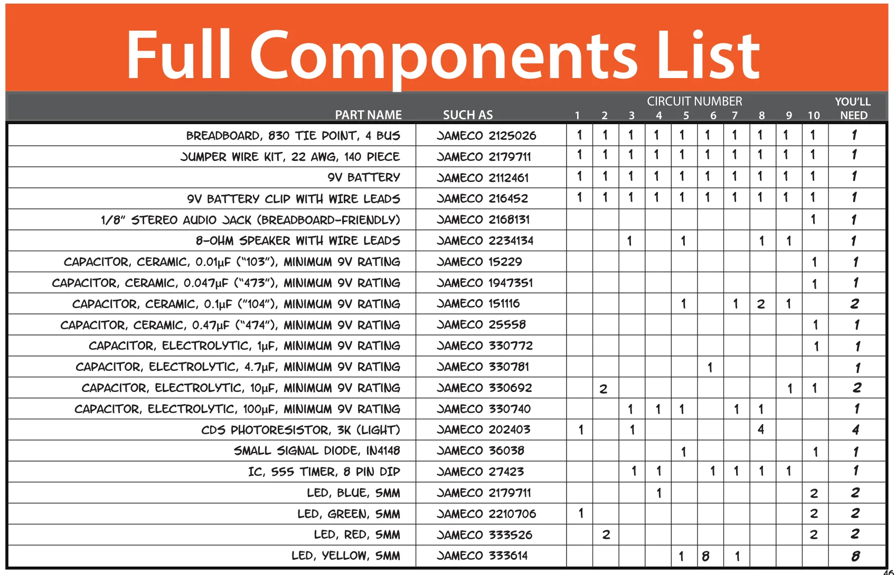
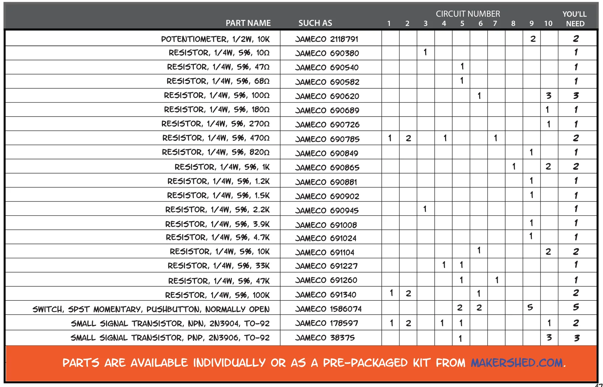

| Part | Such as | 1 | 2 | 3 | 4 | 5 | 6 | 7 | 8 | 9 | 10 | Total |
|---|---|---|---|---|---|---|---|---|---|---|---|---|
| Circuit number | ||||||||||||
| Breadboard, 830 tie point, 4 bus | Jameco 2125026 | 1 | 1 | 1 | 1 | 1 | 1 | 1 | 1 | 1 | 1 | 1 |
| Jumper wire kit, 22 AWG, 140 piece | Jameco 2179711 | 1 | 1 | 1 | 1 | 1 | 1 | 1 | 1 | 1 | 1 | 1 |
| 9V battery | Jameco 2112461 | 1 | 1 | 1 | 1 | 1 | 1 | 1 | 1 | 1 | 1 | 1 |
| 9V battery clip with wire leads | Jameco 216452 | 1 | 1 | 1 | 1 | 1 | 1 | 1 | 1 | 1 | 1 | 1 |
| 1/8” stereo audio jack (breadboard-friendly) | Jameco 2168131 | 1 | 1 | |||||||||
| 8-ohm speaker with wire leads | Jameco 2234134 | 1 | 1 | 1 | 1 | 1 | ||||||
| Capacitor, ceramic, 0.01µF (“103”), minimum 9V rating | Jameco 15229 | 1 | 1 | |||||||||
| Capacitor, ceramic, 0.047µF (“473”), minimum 9V rating | Jameco 1947351 | 1 | 1 | |||||||||
| Capacitor, ceramic, 0.1µF (”104”), minimum 9V rating | Jameco 151116 | 1 | 1 | 2 | 1 | 2 | ||||||
| Capacitor, ceramic, 0.47µF (“474”), minimum 9V rating | Jameco 25558 | 1 | 1 | |||||||||
| Capacitor, electrolytic, 1µF, minimum 9V rating | Jameco 330772 | 1 | 1 | |||||||||
| Capacitor, electrolytic, 4.7µF, minimum 9V rating | Jameco 330781 | 1 | 1 | |||||||||
| Capacitor, electrolytic, 10µF, minimum 9V rating | Jameco 330692 | 2 | 1 | 1 | 2 | |||||||
| Capacitor, electrolytic, 100µF, minimum 9V rating | Jameco 330740 | 1 | 1 | 1 | 1 | 1 | 1 | |||||
| CdS photoresistor, 3k (light) | Jameco 202403 | 1 | 1 | 4 | 4 | |||||||
| Small signal diode, 1N4148 | Jameco 36038 | 1 | 1 | 1 | ||||||||
| IC, 555 timer, 8 pin DIP | Jameco 27423 | 1 | 1 | 1 | 1 | 1 | 1 | 1 | ||||
| LED, blue, 5mm | Jameco 2179711 | 1 | 2 | 2 | ||||||||
| LED, green, 5mm | Jameco 2210706 | 1 | 2 | 2 | ||||||||
| LED, red, 5mm | Jameco 333526 | 2 | 2 | 2 | ||||||||
| LED, yellow, 5mm | Jameco 333614 | 1 | 8 | 1 | 8 | |||||||
| Potentiometer, 1/2W, 10kΩ | Jameco 2118791 | 2 | 2 | |||||||||
| Resistor, 1/4W, 5%, 10Ω | Jameco 690380 | 1 | 1 | |||||||||
| Resistor, 1/4W, 5%, 47Ω | Jameco 690540 | 1 | 1 | |||||||||
| Resistor, 1/4W, 5%, 68Ω | Jameco 690582 | 1 | 1 | |||||||||
| Resistor, 1/4W, 5%, 100Ω | Jameco 690620 | 1 | 3 | 3 | ||||||||
| Resistor, 1/4W, 5%, 180Ω | Jameco 690689 | 1 | 1 | |||||||||
| Resistor, 1/4W, 5%, 270Ω | Jameco 690726 | 1 | 1 | |||||||||
| Resistor, 1/4W, 5%, 470Ω | Jameco 690785 | 1 | 2 | 1 | 1 | 2 | ||||||
| Resistor, 1/4W, 5%, 820Ω | Jameco 690849 | 1 | 1 | |||||||||
| Resistor, 1/4W, 5%, 1kΩ | Jameco 690865 | 1 | 2 | 2 | ||||||||
| Resistor, 1/4W, 5%, 1.2kΩ | Jameco 690881 | 1 | 1 | |||||||||
| Resistor, 1/4W, 5%, 1.5kΩ | Jameco 690902 | 1 | 1 | |||||||||
| Resistor, 1/4W, 5%, 2.2kΩ | Jameco 690945 | 1 | 1 | |||||||||
| Resistor, 1/4W, 5%, 3.9kΩ | Jameco 691008 | 1 | 1 | |||||||||
| Resistor, 1/4W, 5%, 4.7kΩ | Jameco 691024 | 1 | 1 | |||||||||
| Resistor, 1/4W, 5%, 10kΩ | Jameco 691104 | 1 | 2 | 2 | ||||||||
| Resistor, 1/4W, 5%, 33kΩ | Jameco 691227 | 1 | 1 | 1 | ||||||||
| Resistor, 1/4W, 5%, 47kΩ | Jameco 691260 | 1 | 1 | 1 | ||||||||
| Resistor, 1/4W, 5%, 100kΩ | Jameco 691340 | 1 | 2 | 1 | 2 | |||||||
| Switch, SPST momentary, pushbutton, normally open | Jameco 1586074 | 2 | 2 | 5 | 5 | |||||||
| Small signal transistor, NPN, 2N3904, TO-92 | Jameco 178597 | 1 | 2 | 1 | 1 | 1 | 2 | |||||
| Small signal transistor, PNP, 2N3906, TO-92 | Jameco 38375 | 1 | 3 | 3 | ||||||||
Parts are available individually or as a pre-packaged kit from makershed.com.
Original pages

